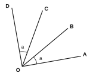
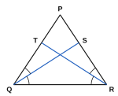

Instructions: Answer all questions. Show all your working clearly in the space given.
Write the axiom used to obtain each result.
(i) a = 5 and b = 5, therefore a = b. (ii) x = y, therefore x + 3 = y + 3.
(iii) p = q, therefore p – 7 = q – 7. (iv) m = n, therefore 4m = 4n.
(v) 2a = 2b, therefore a = b. (vi) The mass of a whole watermelon is greater than the mass of a slice cut from it.
Complete each statement and name the axiom used.
(i) If a = b and b = c, then a = ……
(ii) If x = y, then x – z = ……
(iii) If 3p = 3q, then p = ……
Solve each equation. At each step, write the axiom you used.
(i) x + 7 = 12 (ii) x/3 = 4 (iii) 5x – 4 = 21 (iv) 2(x + 3) = 18
A, B, C and D are points on a straight line, in that order, and AB = CD. Using an axiom, show that AC = BD.
P, Q, R and S are points on a straight line, in that order, and PR = QS. Using an axiom, show that PQ = RS.
In the figure, OA, OB, OC and OD are straight lines drawn from O, and AÔB = CÔD = a. Using an axiom, show that AÔC = BÔD.

In triangle PQR, PQ̂R = PR̂Q. QS bisects PQ̂R and RT bisects PR̂Q. Using an axiom, show that SQ̂R = TR̂Q.

Name the axiom that explains each situation.
(i) Nimal and Kamal had equal amounts of money. Each of them received Rs 200 more. They still have equal amounts.
(ii) Two ropes of equal length are each cut into 4 equal pieces. All the pieces are of equal length.
(iii) Two boxes contain equal numbers of pens. Each box is tripled. The numbers of pens are still equal.
(i) In triangle ABC, AB = AC and AC = BC. Show that AB = BC and name the axiom used.
(ii) What type of triangle is ABC?
(iii) A, B and C are points on a straight line with B between A and C. Which is greater, AC or AB? Name the axiom.
x = y and y + 4 = 10. Find the value of x, naming the axiom used at each step.
Thinking question: A student wrote: “0 × 5 = 0 and 0 × 3 = 0, so 0 × 5 = 0 × 3. Dividing both sides by 0, we get 5 = 3.”
(i) Which axiom did the student try to use?
(ii) Explain why the conclusion is wrong.